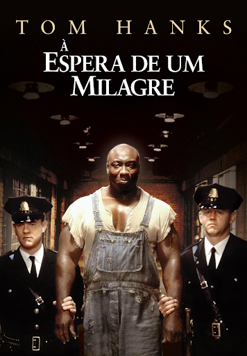

DramaÀ Espera de um Milagre
Diretor
Frank Darabont
Elenco Principal
Tom Hanks, Michael Clarke Duncan, David Morse
Sinopse
▶ Assistir Trailer
1935, no corredor da morte de uma prisão sulista. Paul Edgecomb (Tom Hanks) é o chefe de guarda da prisão, que tem John Coffey (Michael Clarke Duncan) como um de seus prisioneiros. Aos poucos, desenvolve-se entre eles uma relação incomum, baseada na descoberta de que o prisioneiro possui um dom mágico que é, ao mesmo tempo, misterioso e milagroso.